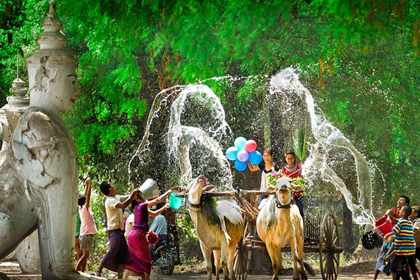
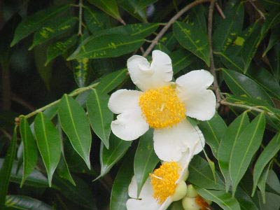

Tankhu(Tagu):April
Written by Khin Myo Chit and Junior Win ( Flowers & Festivals )
1.Tankhu(Tagu)
Old leaves shaken off the stems.
The new year's odours rise.
The wind comes in puffs.
"Gangaw" flowers speard their pollins.
Fragrance everywhere.
Two rival stars
shine brightly together.
Spica and the sliver moon
illumine
high Yugan's rim.
Myanmar New Year
The Myanmar New Year falls on the second week of April.The New Year is ushered in by three days of Water Festival.According to folklore, Thagyarmin, king of the celestials, will be on a visit to the human abode for three days. If you stay in this country for some time, you are sure to hear a lot about Thagyarmin, king of the celstials.He may be, as some scholars say, a deity borrowed from the Hindu mythology, or he may be a paralled of Zeus, but it doesn't really matter.What matter is that he is very close to the Myanmar Buddhists.His name pops up every now and then in everyday conversation."Thagyarmin knows I'm telling the truth!" "May Thagyarmin help me out of this."People sort of believe in him.There is hardly anyone whose soul is so dead as not to.
Who is Thagyarmin?
Thagyarmin may belong to myths , but he is very mush within the domain of Buddhist thought and way of life.He is not an immortal like the Greek gods.There is no such thing as an immortal according to the teachings of the Buddha.Thagyarmin, like all celestials, has a very long life-span, thousands of times longer than human life.The life of a celestials is counted in astronomical figures.However, Thagyarmin or any other celestials is a being who is going round the cycle of rebirth , like humans. Thagyarmin is just a being, who in his other lives, most probably human has done good deeds, the strength of which causes him to be reborn in that state. The state of being a human is believed
to be the best in which to do good deeds that would enable one to go up higher states of existence.
How to become a Thagyarmin or a celestial?
In one of the Jataka tales, the tales that tell of the former lives of the Buddha, there is an account of how the dynasty of Thagyarmins started. There was a man named Magha who organized good works, like repairing roads, building bridges , digging wells.He gave all he could for the cause. When he died, he was reborn in the celestial regions as king of the celestials.Some of the details of his story will again turn up in the story of the monsoon season in the month of June. The story of Thagyarmin is like a guide to Myanmar Buddhists: How to becomes a Thagyarmin.Repair roads, build bridges, digwells, one of these days you might be a Thagyarmin!
Thagyarmin's duties and obligations
A Thagyarmin's life is one of bliss and sensual pleaures, as could be imagined, whatwith four chief queens and billions of beautiful nymphs.a life-time of ones of years. but how long ? Aye, there's the rub. The life of bliss lasts only so long as the force of good deeds lasts . If he is too steeped in pleasures, he might forget to reinforce his good deeds until too late.As in the nature of things, Thagyarmins come and go.The line of Thagyarmins goes on and on. The Thagyarmin of today is fortunate, because he has his duties and obligations.The stroy goes that the Buddha before he entered the Parinibbana summoned the Thagyarmin and entrusted him with the responsibility of seeing that the Buddha's teaching flourish.Thagyarmin is there to see that humans live according to the way of life taught by the Buddha.This act in itself is a good deed , so it is not possible for the Thagyamin to forget to reinforce his good deeds. It is by way of helping and guilding humans that ge comes and spiritual duties.New Year is the time for people to cleanse themselves of the defilements they might have collected during the year and look forward to a better life.
Fantastic Myths... But Buddhist in Spirit
Thingyan festival, as the Water Festival preceding the New Year is called, is wreathed with fantastic tales and folklore, but Buddhist in spirit.Thagyarmin will be in the human abode to see that people live and practise the Buddha's way . So it is the time to do good deeds and make up for all the neglect and omissions that one might be guilty of; and of course, resolve to do better during the coming year. People keep fast, give alms and do good deeds. Even those who cannot afford much, fetch water for older folks given them personal service, like washing and shampooing their hair.Shampoo made of boiled soap acacia fruits and strips of lenden-bloom tree bark is made at home and distributed among friends and neighbours. There is goodwill and loving kindness all around . An auspicious way to start the New Year with.
Trus Spirit of the Water Festival
The true spirit of the water festival is to have nice clean fun with dear friends sprinkling scented water on one another.Among friends, all the teasing and palying and joking go with the spirit of the season.It is not all fun and play however, there are chores to do like preparing shampoo water and giving personal service to older folks. With the sound of the Ohzie drums, cymbals and flute in the air every task is a joy to do. With sacred duties to perform, the fun is more wholesome and enjoyable, without any qualms. Perhaps, this kind of spirit is not so evident in the heart of cities like Yangon, where there is rough play with water hoses.The revellers seem more intent to embarrasss and aggravate than to be playful and give pleasure. Much of the finer aspects of the festival is to be seen in small towns and villages.Yet even in cities, while the wild celebrations are rampant, the monasteries and pagodas are teeming with people of all ages.Most of them are there with the serious purpose of doing good deeds.Young people sweep the grounds, wash building and help older people with the chores of cooking alms food for monks.It is indeed a silver lining as the revelry goes on for three days.

A Season of Giving
All these April days, there is music in the air .Wherever you go, you see marquees by the roadside.Inside them are sets of yellow robes, black alms bowls, umbrella and leather slippers, lais out amidst flowers and coloured paper streamers.Right at the entrance a notice board announces that a mass novitiation ceremony is to be held during the Water Festival and that your contribution is welcome. Such marquees are centres of activity during the Water Festival. Each centre is organized by people of the localty or by the those who belong to the same profession, like trishawmen, taxi drivers or busmen.Such pool their resoureces to do deeds of merit like novitiation.
An Important Family Ritual
Novitiation is of vital importance in a Buddhist family.Boys are sent to the monastery where they stay for a week or more.Their heads are shaved and they wear yellow robes go on alms rounds with their black alms bowls and keep sabbath. Parents consider it a great privilege to novitiate their sons: that is, in fact, giving their own flesh and blood into the Buddha's Order of the Sangha.Those who do not have sons of their own, novitiate other people's sons so that they do not miss doing this deed of great merit. It is a meritorious deed on the part of the one who is novitiated , for he gives himself into the Buddha's Order. He gives up the worldly pleasures and lives a life of austerity and discipline, even if it is for a short time. No man's life is considered fulfilled unless he is noviated, it is a must for a Buddhist man. People consider it to be a gross omission if they fail to novitiate their son.There is no death of helpers for those with limited means to novitiate their sons.One of the New Year activities is to organize mass novitiation when everyone comes forward with contributions in cash or in kind or failing both his personal service.Thus it is quite impossible for a Buddhist boy to grow up unnovitiated with such voluntary helpers and organizers of mass novitiations. A novitiation ceremony can be simple or it can be done with all the trimmings of folk music troupes and processions.There is such a wealth of tradition and custom in the colourful processions that are part of the Thingyan Festival scene.